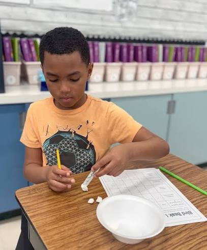
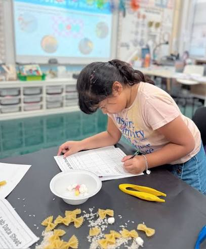

Grades 5–8 · Hands-on ecology + design trade-offs
Study living systems. Use evidence. Design careful trade-offs.
Explore the curriculum

To form a more diverse and inclusive STEM community by inspiring the next generation of scientists and engineers—people who study living systems and make decisions with evidence.
Learn moreCore modules
Live web sims
Grade band
Early programs matter for access (guided STEM experiences that otherwise often come only through family, school, or professional networks), agency (using evidence and taking responsibility for decisions—not guessing), and belonging (a credible signal that people like them can become scientists and engineers). Those attitudes can support persistence into opportunity: the next course, project, mentor, or internship rather than opting out. That last step is our theory of change—not a result we claim this course has already proven.
Through FlockQuest, students practice the habits of science and engineering: observe and measure, build rules from evidence, notice when information is incomplete, and design solutions under real limits—budget, neighbors, and living systems. Bird ecology keeps the work concrete and energetic for middle schoolers.
In later modules they try on two kinds of thinking: environmental science (What does the evidence say living things need?) and civil / environmental engineering (Where should we invest—and what are the trade-offs?).
Collect data: which tool works in drought or flood?
Unit II · EvidenceMake a fair rule—then see incomplete data fail
Unit III · SystemsFood webs: one change tugs everything
Unit IV · DesignEvidence, budget, and trade-offs on FlockQuest
Active lessons for energetic middle schoolers. Printable handouts. A live conservation trade-off sim for the capstone.
Made to sit alongside enrichment programs serving first-generation scholars—joyful fieldwork energy, serious STEM habits.